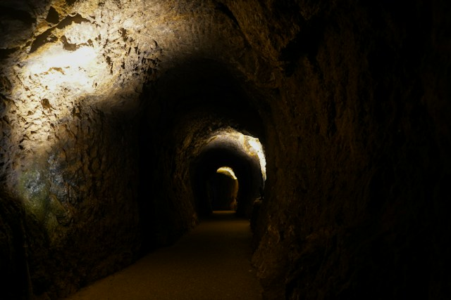

Los Túneles de Barranquilla
Lugares misteriosos / Memoria urbana

La historia
El centro histórico de Barranquilla conserva edificios, calles y rincones que recuerdan diferentes etapas del crecimiento de la ciudad. Detrás de algunas construcciones antiguas también sobreviven preguntas sobre los espacios que pudieron existir bajo sus cimientos.
Entre los relatos que despiertan curiosidad aparecen las historias sobre posibles pasadizos subterráneos, recorridos ocultos y conexiones entre edificaciones antiguas. Sin embargo, no debe darse por comprobada la existencia de una red de túneles secretos sin documentación histórica o evidencia arqueológica que lo confirme.
El misterio del centro no depende únicamente de lo que podría esconderse bajo tierra. Sus edificios antiguos, sus callejones y las memorias de quienes los han habitado también han alimentado historias de presencias extrañas y sucesos difíciles de explicar.
En su libro Fantasmas del Centro, el periodista y gestor cultural Johnny Insignares reúne relatos relacionados con lugares históricos de Barranquilla. Estas narraciones muestran cómo los recuerdos de la ciudad pueden convertirse en historias de misterio que pasan de una generación a otra.
¿Qué secretos conserva el subsuelo de la ciudad? Por ahora, la pregunta debe permanecer abierta: entre la historia documentada y la imaginación existe un territorio que merece investigarse con cuidado.
Ubicación
Centro histórico de Barranquilla, Atlántico, Colombia.
Fuente
El Tiempo. Barranquilla: libro sobre fantasmas en el Centro (2023).
Consultar fuente